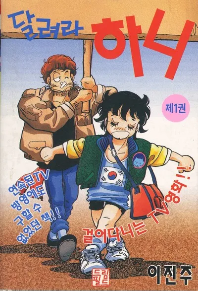
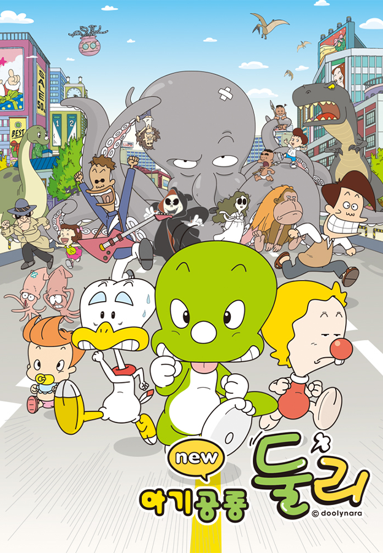
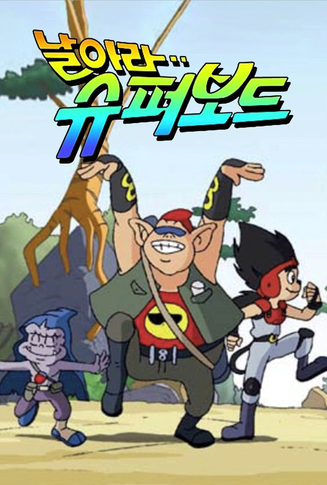
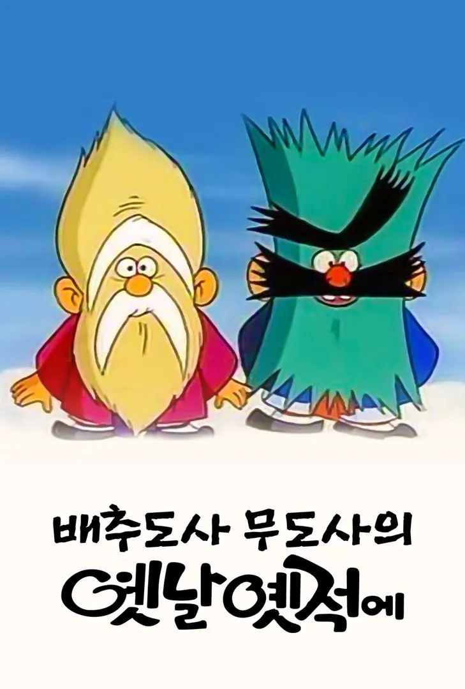
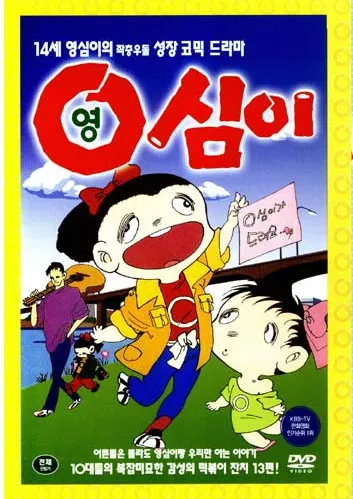

달려라 하니
한국 순정 스포츠 만화 이진주 글/그림
1988년 8월 15일부터 같은 해 11월 19일까지 KBS 2TV 애니메이션으로 큰 인기를 끌었다.
줄거리: 어릴적 병을 앓던 엄마를 잃고 아빠는 유지애라는 탤런트와 사귀게 되고 이후 집을 처분하고 다른 나라로 파견 갔다. 그런 아빠에게 배신감을 느낀 하니에게 낙이라면 오직 달리는 것 뿐이었고, 그런 하니를 홍두깨 선생이 눈여겨 보게 되고 직접 육상부로 스카우트한다. 그렇게 여자 육상선수 하니의 이야기가 시작된다.

아기공룡 둘리
김수정 글/그림
1983년부터 10여년 동안 월간 만화잡지 보물섬에 연재되었던 인기 만화 '아기공룡 둘리'를 애니메이션으로 재구성한 작품. 1987~88년에 KBS에서 TV시리즈를 만들었다.
줄거리: 1부는 둘리가 고길동의 집에 와서 철수와 영희, 희동이와 만들어나가는 에피소드였고, 2부는 도우너와 또치 합류 후에 고길동의 집과 동네에서 벌이는 각종 말썽을 그렸다.[4] 그리고 3부는 둘리 일당이 희동이와 함께 나룻배를 타고 바다 한가운데로 표류하게 되면서 벌어지는 이야기로, 세계를 누비며 모험을 하는 에피소드로 구성되었다.

날아라 슈퍼보드
허영만 글/그림
중국 고전소설 서유기를 모티브로 한 작품. 만화왕국이란 월간잡지에 처음 연재할 당시, 제목은 <미스터 손>이었지만 애니메이션화가 진행되면서 원작도 <날아라 슈퍼보드>로 제목이 고쳐졌다.
한호흥업에서 애니메이션화되면서 제목은 <날아라 슈퍼보드>가 되었고, 1992년 방영 당시 최고 시청률 42.8%를 기록하며 국민 애니메이션의 자리에 군림했다.
줄거리: 주인공 손오공은 화과산에서 태어난 돌원숭이로, 원숭이들의 왕 노릇을 하다가 하늘로 가서 말썽을 부린 뒤 억만근 쇳덩이 밑에 깔린다. 그 후 지나가던 삼장법사가 손오공을 구하고 요괴들을 봉인하기 위해 함께 여행을 떠난다는 것이 주된 스토리이다.

배추도사 무도사의 옛날 예적에
1990년 KBS에서 전래동화를 소재로 제작하여 방송한 애니메이션.
애니메이션 제작은 한호흥업과 동양동화, 신원프로덕션, 테이크원 등이 번갈아 맡았다.
전래동화라는 한국적인 소재를 잘 표현한 데다 상당히 재미있었으므로 꽤나 인기 있는 만화시리즈였다. 때문에 시청률도 그럭저럭 유지되었는데, 그 덕인지 연속적으로 재방송되었다.
줄거리: 배추도사와 무도사가 이야기꾼이 되어 옛날 이야기를 소개한다. 작중에서 배추도사 무도사가 나누는 대화가 재미있는 데다가 인간 캐릭터가 아닌 의인화된 캐릭터가 매우 인상적이다. 근본적으로는 이 두 도사가 여러 이야기를 재미있게 풀어내는 게 작품의 컨셉이다.

영심이
배금택의 만화 원작 열네 살 영심이
1990년에 방영 시작했다.
줄거리: 츤데레 여주인공과 장난꾸러기 여동생, 찌질한 남주인공을 비롯한 개성 넘치는 친구들 등 작중 등장인물의 캐릭터성이 현재 시장에 내놓아도 아무런 위화감이 없을 정도로 세련되었다. 장르도 지금과 익숙한 학원 일상 개그물이다.